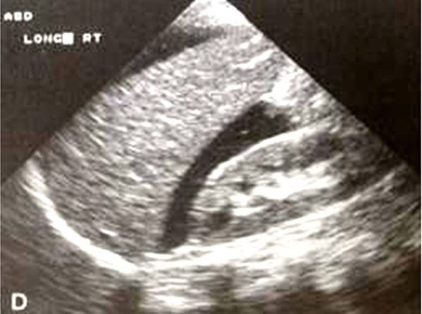
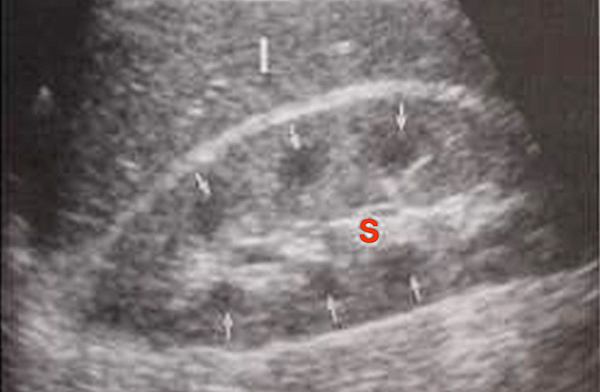
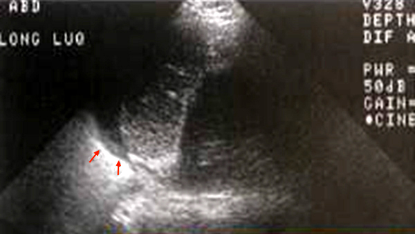
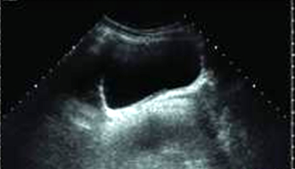
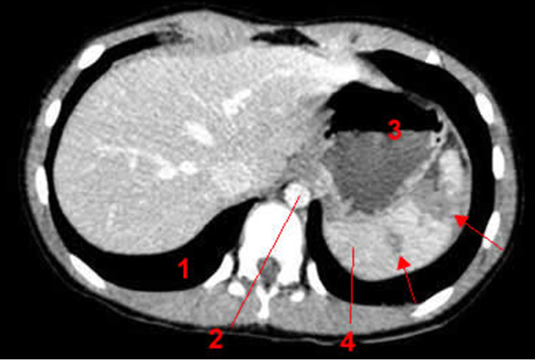
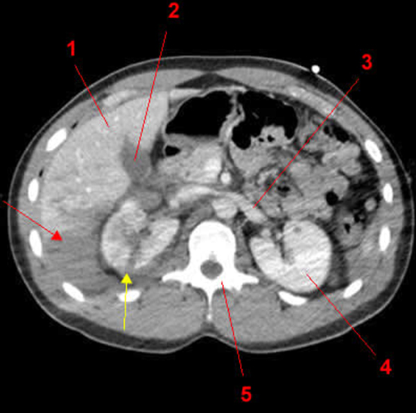

Bienvenue Sur Medical Education
Imagerie du traumatisme abdominal
Spécialité : gastro-entérologie /
Points importants
- Les traumatismes abdominaux-pelviens représentent 15% des lésions en traumatologie.
- Mortalité élevée, environ 20%, due aux lésions abdominales mais aussi aux lésions fréquemment associées
- Distinguer les traumatismes fermés, majoritaires, des traumatismes ouverts
- Distinguer les traumatismes abdominaux isolés des polytraumatismes
- Objectifs de l'évaluation initiale : identifier les patients nécessitant une orientation vers une salle de déchoquage, déterminer une stratégie thérapeutique, surveillance ou orientation vers un bloc chirurgical ou une salle de radiologie interventionnelle
- Mauvaise sensibilité de l'examen clinique, l'imagerie est fondamentale afin d'identifier et de localiser une hémorragie et de dépister de façon exhaustive les lésions viscérales
Indications
PREALABLE
Circonstances de survenue
- Le mécanisme lésionnel, quand il est connu, doit être communiqué au radiologue
- Traumatisme antérieur ou latéral : risque d’écrasement des viscères pleins ou creux entre le plan musculaire antérieur et le plan osseux postérieur
- Traumatisme tangentiel ou oblique : risque d’arrachement des organes pédiculés (rate, rein, grêle, colon mobile)
- Traumatisme sur un organe creux en réplétion (estomac, duodénum, vessie) : risque de rupture
- Décélération brutale : risque de désinsertion d’organes pleins (rate, foie) ou d’organes creux par le biais d’une désinsertion mésentérique
- Traumatisme pénétrant par arme, par arme à feu …
Examen clinique
-
Patient conscient victime d’un traumatisme abdomino-pelvien isolé, recherche :
- d’une douleur localisée
- d’une défense ou d’une contracture abdominale
- d’un empattement douloureux d’une fosse lombaire ou du flanc
- d’une douleur à la mobilisation de la ceinture pelvienne
- d’un hématome des flancs ou du périnée (signe retardé)
- d’une hématurie
- d’une dysurie ou d’un globe vésical
-
Patient victime d’un polytraumatisme :
- examen clinique peu contributif (troubles de conscience et lésions associées)
- Dans tous les cas, évaluation du retentissement hémodynamique du traumatisme (PA, FC, signes périphériques de choc) et surveillance évolutive +++
STRATEGIE D’IMAGERIE
- Fonction du statut hémodynamique du patient
Détresse majeure non contrôlée
-
Dans le cadre d’un polytraumatisme :
-
bilan radiologique en salle de déchoquage, oriente la chronologie des premiers gestes thérapeutiques (drainage thoracique, laparotomie d’hémostase, artério-embolisation) :
- radiographie du thorax de face, du rachis cervical de profil, du bassin de face
- échographie abdominale : visualise une hémorragie intra-abdominale, débouchant sur une laparotomie d’hémostase
-
en l’absence d’hémopéritoine expliquant le choc hémorragique :
- rechercher une origine thoracique (hémothorax, hémomédiastin) ou rétropéritonéale sur les radiographies initiales du thorax et du bassin
- visualisation d’une fracture de bassin complexe ou déplacée (hématome rétropéritonéal, peu visible à l’échographie) : orientation vers une artériographie +/- embolisation des artères lésées accessibles.
- en l’absence d’élément d’orientation expliquant la détresse : scanner thoraco-abdominal et encéphalique
- pour certaines équipes, disposant d’un scanner à proximité immédiate de la salle de déchoquage et réservé aux urgences, l’imagerie initiale d’un patient en état de choc non contrôlé peut être réalisée par un scanner corps entier de première intention.
-
bilan radiologique en salle de déchoquage, oriente la chronologie des premiers gestes thérapeutiques (drainage thoracique, laparotomie d’hémostase, artério-embolisation) :
- Dans le cadre d’un monotraumatisme abdominal ou d’un traumatisme ouvert, la découverte échographique d’un hémopéritoine significatif oriente le plus souvent vers une laparotomie d’hémostase.
Patient en état de choc contrôlé par la réanimation
-
Accès direct au scanner abdomino-pelvien injecté (examen de référence pour le bilan d’un traumatisme abdominal) ou tri en salle de déchoquage, puis scanner :
- mise en évidence d’un hémopéritoine ou d’un hémorétropéritoine
- bilan des lésions abdominales et pelviennes
- Associé à un scanner thoracique et encéphalique dans le cadre de la prise en charge d’un polytraumatisme
Patient stable
- Explorations orientées par les circonstances, l’examen clinique et les lésions associées
- La présence ou non d’un épanchement à l’échographie permet de guider la chronologie des explorations
- Le scanner abdomino-pelvien doit être réalisé au plus vite en cas d’épanchement péritonéal
Description de la technique
RADIOGRAPHIE DU THORAX
- Visualise des fractures des dernières côtes, un épanchement pleural, une rupture diaphragmatique
ABDOMEN SANS PREPARATION
- Peut visualiser un pneumopéritoine (croissant clair sous-diaphragmatique) ou un pneumorétropéritoine
- Nécessite un cliché debout ou demi-assis, moins performant que le scanner : pas d'indication dans le bilan d'un traumatisme abdominal
- Signes indirects d'épanchement péritonéal liquidien tels que l'effacement de l'ombre des psoas : manque de sensibilité, peu d'intérêt dans le bilan d'un traumatisme abdominal
ECHOGRAPHIE ABDOMINALE
Objectif principal
- Détecter un épanchement péritonéal, visible à partir de 100 mL dans le cul-de-sac de Douglas
- Détection limitée des lésions d'organes pleins
- Mauvaise performance dans la détection des hématomes rétropéritonéaux ou pelviens et des lésions d'organes creux
Place du FAST-écho
- Bonne performance dans la recherche d'un épanchement péritonéal par des médecins non radiologues
- Examen intégrable dans le bilan initial du traumatisme abdominal en préhospitalier ou en salle de déchoquage
-
Recherche un épanchement :
-
dans l'espace hépatorénal (Morrisson)
-  fichier_538 Photo Hémopéritoine dans l'espace de Morrisson
- fichier_539 Photo Hémopéritoine dans l'espace de Morrisson
-
dans l'espace splénorénal
-  fichier_540 Photo Loge splénorénale normale
-  fichier_541 Photo Loge splénorénale : épanchement
-
dans le cul-de-sac de Douglas
-  fichier_542 Photo Cul de sac de Douglas normal
- fichier_543 Photo Epanchement du cul-de-sac de Douglas
-
dans l'espace hépatorénal (Morrisson)
- Associé à la recherche d'un épanchement péricardique (incidence sous xyphoïdienne)
- Par extension, recherche d'un pneumothorax (incidences des espaces intercostaux antérieurs), d'un hémothorax (incidences des 10es espaces intercostaux, ligne axillaire moyenne), d'un épanchement péricardique en incidence parasternale gauche
Echographie couplée au doppler
- Mise en évidence de la perfusion du parenchyme rénal : éliminer une thrombose de l'artère rénale
Scanner spiralé avec injection
- Coupes sans injection (saignement récent)
-
Coupes après injection :
- clichés thoraciques, < 70 sec : recherche d'une lésion aortique, images en phase artérielle
- clichés précoces (environ 70 sec après injection) : coupes abdominales, examen en fenêtre pulmonaire (pneumopéritoine, pneumorétropéritoine)
- clichés tardifs en cas de suspicion de lésion des voies excrétrices (hématurie, fracture de bassin, lésion rénale)
- ± clampage et injection de produit de contraste dans la sonde urinaire en cas de suspicion de lésion vésicale
-
Objectifs :
- visualise et estime l'abondance d'un épanchement péritonéal liquidien ou gazeux
- recherche un épanchement rétropéritonéal
-
recherche une lésion d'organe plein (rate, foie, rein) et la caractérise (contusion, hématome du parenchyme ou sous-capsulaire, fracture ou lacérations, lésions vasculaires du pédicule)
-  fichier_544 Photo TDM : lésion de la rate
-
 fichier_545
Photo
TDM : lésion traumatique du foie
fichier_545
Photo
TDM : lésion traumatique du foie
-  fichier_546 Photo TDM : lésion traumatique du foie et du rein droit
- fichier_547 Photo TDM : lésion traumatique du rein droit
- visualise une extravasation active du produit de contraste
- recherche une contusion ou une lésion d'organe creux
- recherche une rupture vésicale
- recherche une lésion du diaphragme
- visualise des fractures de bassin
Urographie intraveineuse
- Indication exceptionnelle : patient instable dirigé d'emblée au bloc, injection sur table avec cliché précoce pour éliminer une lésion de l'artère rénale
Artériographie
- Peu de rôle diagnostic dans le cadre du traumatisme abdominal
- Embolisation sélective d'une artère pelvienne, hépatique ou lombaire guidée par la visualisation d'une extravasation artérielle
IRM
- Peu d'intérêt du fait de problèmes de disponibilité en urgence et des contraintes liées à l'examen
- Intérêt secondairement pour la mise en évidence de lésions méconnues (ex : hernie diaphragmatique)
Pièges éventuels
- Lésion d'un organe creux
- Mauvaise performance de l'échographie, sensibilité du scanner 70%
- Penser à la rectoscopie lors des traumatismes pelviens graves
- Rupture diaphragmatique (5% des traumatismes abdomino-pelviens ou thoraciques)
- Sensibilité du scanner 42-82%, découverte lors d'une laparotomie ou thoracotomie pour lésion hémorragique dans 45% des cas
- Atteinte pancréatique
- 40% des examens normaux à la phase initiale
- Lésions vessie et urètre
- Parfois mal visualisées par le scanner, nécessité d'une urétrocystoscopie
Surveillance
Surveillance échographique des traumatismes abdominaux peu sévères à l'hémodynamique stable
- Détection d'un épanchement secondaire
- Surveillance d'un épanchement de faible abondance
Surveillance tomodensitométrique
- D'un épanchement péritonéal
- D'un hématome sous-capsulaire de rate
- D'une contusion hépatique
- D'un traumatisme rénal (contusion rénale, complications urinaires secondaires)
Bibliographie
- Scalea TM, Rodriguez A, Chiu WC, Brenneman FD, Fallon WF Jr, Kato K et al. Focused assessment with sonography for trauma (FAST) : results from an international consensus conference. J Trauma 1999; 46(3): 466-72
- Adnet F, Galinski M, Lapostolle F. Echographie en traumatologie pour l'urgentiste : de l'enseignement à la pratique. Réanimation 2004, 13 (8) : 465-470
- Vivien B. Traumatismes graves abdomino-pelviens fermés :démarche diagnostique et critères de gravité. In Urgences 2007 : 361-373
- Rose JS. Ultrasound in abdominal trauma. Emerg Med Clin N Am. 2004 ; 22 : 581-99.
- Rozycki GS, Ochsner MG, Schmidt JA, Frankel HL et coll. A prospective study of surgeon-performed ultrasound as the primary adjuvant modality for injured patient assessment. J Trauma 1995; 39 (3) : 492-8.
- McGahan JP, Rose J, Coates TL, Wisner DH, Newberry P. Use of ultrasonography in the patient with acute abdominal trauma. J Ultrasound Med 1997 ; 16 (10) : 653-62.
-
Petrovic T, Lapostolle F, Adnet F. L'échographie en médecine préhospitalière. Urgences 2007 :223-231)
Auteur(s) : Laurence BERTON